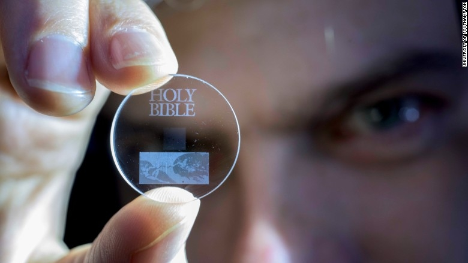
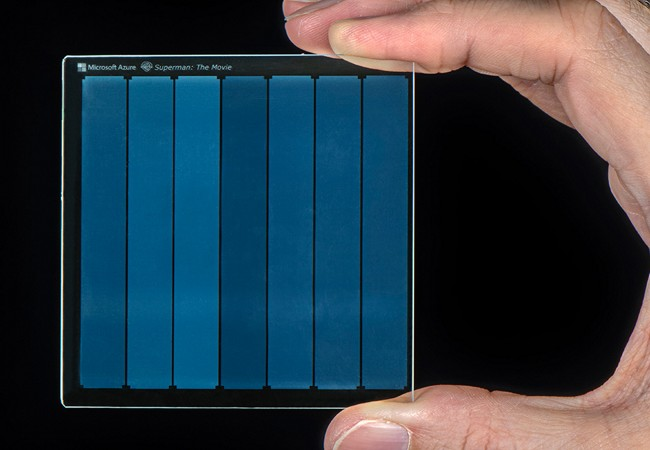

EN EL CINE
Star Trek
En la serie original, los cristales de dilitio se formaban únicamente de manera natural, convirtiendo su búsqueda en el argumento de varias historias. En Star Trek IV: Misión: salvar la Tierra, Spock descubrió un método para recristalizar el dilitio que permitió a la tripulación regenerar los cristales del ave de presa klingon capturado. El método consistía en usar reactores de fisión del siglo XX para reunir fotones de alta energía que regeneraban los cristales
Un cristal de tiempo (o poH qut en klingon) es un mineral raro en una fase de no-equilibrio en la materia. Los cristales de tiempo pueden identificarse por sus índices ortogonales. Para los klingons, al menos aquellos fuera de Boreth, los cristales de tiempo son un mito, un símbolo de Kahless, homónimo de Qo'noS. (DIS: "Magic to Make the Sanest Man Go Mad", "Through the Valley of Shadows")
A mediados del siglo XXIII, la Academia de Ciencias de Vulcano enseñaba sobre los cristales de tiempo. Ninguna especie integrante de la Federación había sido capaz de estabilizarlos ya que el ritmo de desintegración de su red cristalina era demasiado impredecible, y se pensaba que cualquier tecnología basada en cristales de tiempo debía haber sido obra de una especie cuadrimensional. (DIS: "Magic to Make the Sanest Man Go Mad")

Superman y los Cristales
Microsoft presentó ayer en su conferencia Ignite 2019 un sorprendente método de almacenamiento de datos. La compañía de Bill Gates ha trabajado de manera conjunta con Warner Bros. para almacenar y recuperar la totalidad de la película de Superman de 1978 en un fragmento de cristal de 75 por 75 por 2 milímetros de espesor. La placa cristalina es “aproximadamente del tamaño de un posavasos para bebidas”, según explica Microsoft en un comunicado oficial.
Microsoft usa láseres infrarrojos para codificar datos en "vóxeles", un equivalente tridimensional a los píxeles que estamos acostumbrados a ver en las pantallas. Estos datos quedan almacenados dentro del cristal y es la labor de los algoritmos de aprendizaje automático el decodificar los patrones para volver a leer estos datos. Aún queda bastante tiempo para que Microsoft pueda implementar esta tecnología en el mercado ya que aún está en desarrollo. ¿Llegaremos a tener algún día discos duros de cristal?
 